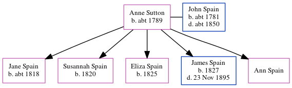

Anne Spain (née Sutton) c1789 -
[ Home ] | [ Calendar ] | [ Surnames Index ] | [ Errors ] | [ Family History ]Anne Sutton, the wife of John Spain (the 3 times great-grandfather of Nigel Horne), was born in Staple, Kent, England c. 17891,2 and married John (a labourer with whom she had 5 children: Jane, Susannah, Eliza, James and Ann) in Stourmouth, Kent, England on 30 Jun 18173 (According to KFHS02/07, Anne Sutton was a widow at marriage, so Sutton was probably not her maiden name.).
During her life, she was living in Eythorne, Kent, England in 18511; and in Canterbury, Kent, England in 18612.
Children
- Jane was born c. 1818
- Susannah was born in 1820
- Eliza was born in 1825
- James was born in 1827
- Ann was born c. 16 Feb 1823
Citations
- 1851 England Census Online publication - Provo, UT, USA: The Generations Network, Inc., 2005.Original data - Census Returns of England and Wales, 1851. Kew, Surrey, England: The National Archives of the UK (TNA): Public Record Office (PRO), 1851. Data imaged from the National
- 1861 England Census Online publication - Provo, UT, USA: The Generations Network, Inc., 2005.Original data - Census Returns of England and Wales, 1861. Kew, Surrey, England: The National Archives of the UK (TNA): Public Record Office (PRO), 1861. Data imaged from the National
- Public Member Trees Online publication - Provo, UT, USA: The Generations Network, Inc., 2006.Original data - Family trees submitted by Ancestry members.Original data: Family trees submitted by Ancestry members.
Family Tree
Map
Generated by ged2site. Last updated on Jul 3, 2024